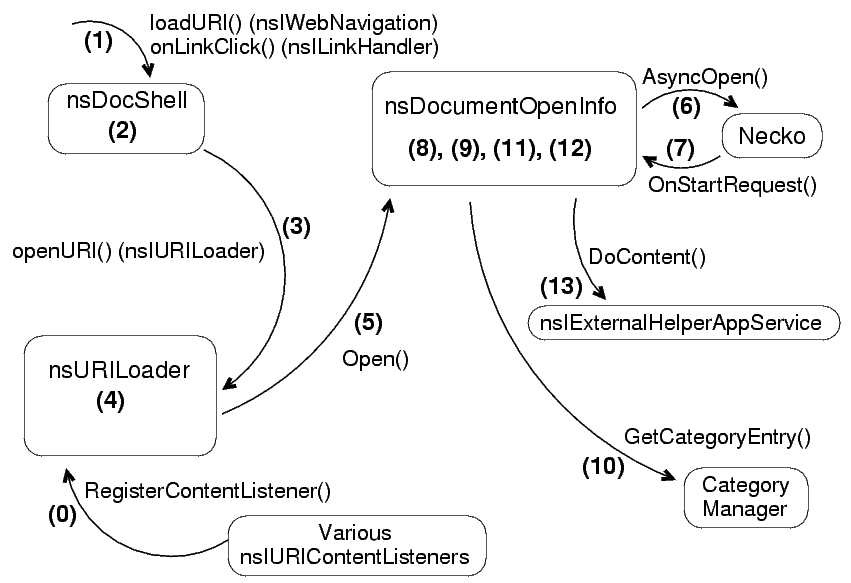

This document describes the beginning of the document loading process. We start with the request to load a particular link in a particular window, and proceed up to the point at which the data stream is dispatched to the proper handler. The final goal is to find the correct stream listener to pump the data into when necko calls OnDataAvailable (e.g., we may find the HTML parser as the stream listener to give the data to).
nsDocShell/nsWebShellnsDocShell/nsWebShell implements too many interfaces to count; the
ones that matter to us most are nsIWebNavigation and
nsILinkHandler.nsURILoadernsIURILoader. It keeps track
of currently pending loads and registered content listeners. Some facilities
are provided for starting loads, canceling loads, and other such
micromanagement.nsDocumentOpenInfonsDocumentOpenInfo implements nsIStreamListener and
proxies the nsIStreamListener calls over to the "real" stream
listener once one is chosen. This is the class that handles deciding where the data from the load should go.nsIURIContentListener
implementationsnsIStreamListener to pump data
into). Most often, the one we find is nsDSURIContentListener,
which corresponds to a docshell and handles most of the data types that Mozilla
handles internally.
nsIExternalHelperAppServicensIExternalHelperAppService and let it look for a helper app, put up the "what do I do now?" dialog, and so forth.

During startup and component initialization, components register
themselves with the URILoader via RegisterContentListener.
These registered listeners are used later during content dispatch.
API calls to load a new URI. These can come in via
nsIWebNavigation (a scriptable embedding interface) or
nsILinkHandler (an internal interface used for link clicks).
Both interfaces are implemented by nsWebShell/nsDocShell. These
API calls will typically pass in a URI string or object to load, and may
include information like the name of the target frame (for <a
target="something">, e.g.).
nsDocShell::InternalLoad() handles targeting to the correct
docshell (if the load has a target window associated with it), scrolling to
anchors (if the load is an anchor within the current page), and session
history issues. It calls DoURILoad().
DoURILoad() creates a channel, massages it to have the right
POST data, load flags, cache key, referrer, etc. It then passes the channel
to DoChannelLoad, which does some more flag massaging and then
calls into the URILoader.
nsURILoader::OpenURI gets a channel to open, a boolean
indicating whether this load is the result of a link click, and an
nsISupports "window context" (the docshell triggering the load,
actually, but in drag and heavy makeup).
nsURILoader::OpenURI notifies the
nsIURIContentListener hanging off the window context, if any, of
the start of the load; this gives embedders a chance to abort the load if
this URI type is something they want to handle in the embedding app. If the
load is not aborted, we create an nsDocumentOpenInfo object for
this load, passing it the "this is a link click" boolean and the window
context.
nsDocumentOpenInfo::Open is passed the channel to open. It
calls GetInterface on the window context to get and save that
context's nsIURIContentListener.
nsDocumentOpenInfo just opens the channel, setting itself as
the stream listener.
OnStartRequest notification comes back from Necko
nsDocumentOpenInfo::OnStartRequest checks the response status
code on the channel for HTTP channels and drops the load on the floor if
warranted (e.g. 204 or 205 responses). Then it calls
nsDocumentOpenInfo::DispatchContent
nsDocumentOpenInfo::DispatchContent starts doing the real
dirty work. First it checks whether the channel has "Content-Disposition:
attachment" set. If so, it skips trying to find an internal viewer and goes
right over to looking for a stream
converter. Otherwise, DispatchContent goes through a
three-step process to try to find the correct listener.
The basic idea is that DispatchContent calls
nsDocumentOpenInfo::TryContentListener on various content
listeners; if that returns true, we have found the right listener and we are
done. TryContentListener makes use of the
IsPreferred and CanHandleContent functions on
nsIURIContentListener and calls DoContent() on the
listener if it claims to handle the data, as well as hooking up a stream
converter if the listener asks for one. If any of those steps fails, the
function returns false so that another content listener will be looked
for.
The first content listener we check is the content listener associated
with our window context (the docshell that initiated the load). If this
can't handle the content type, we loop over our stored list of possible
listeners (previously registered via
RegisterContentListener) and ask each one in turn whether it
can handle the data.
If we still have not found an nsIURIContentListener,
we ask the category manager whether it has an entry for the desired content
type under the NS_CONTENT_LISTENER_CATEGORYMANAGER_ENTRY key.
If it does, we instantiate that component using its contractid (via
CreateInstance) and call TryContentListener on it.
If we find no content listener willing to handle the data, we look for a
content handler (using CreateInstance on
NS_CONTENT_HANDLER_CONTRACTID_PREFIX + aContentType). If a
handler is found, we call HandleContent on it to give it a
chance to take over the load. If it does so, we abort the entire dispatch
process right here and cancel the necko request; we will not be getting a
stream listener to stream data into, since the content handler has taken over
completely.
If at this point we do not have an nsIURIContentListener, we
have failed to find a way to handle this content type. If that is the case,
DispatchContent tries to convert the data to
some other content type by looking for a stream converter that takes our
content type as input and outputs the magic type "*/*" (which just means
we'll take anything it can give us). If the type of the data is
"application/x-unknown-content-type" (another magic type), this is where
nsUnknownDecoder would be instantiated.
The conversion attempt is made by calling ConvertData. This
creates a new nsDocumentOpenInfo object and sets it as the
output streamlistener of the converter. This way, once we know what type
we've managed to get we can attempt to redispatch it.
If a converter is found, we hook that up as our stream listener and are
done -- we just need to pump data into it and let the downstream
nsDocumentOpenInfo handle the final dispatch.
If we still do not have a stream listener, that means that we
failed to find an nsIURIContentListener or
nsIContentHandler for this type. Give the load to the helper
app service; this will return an nsIStreamListener that we can
use.